overview
work{spacer} is a small native app for running coding agents on your own machine, with your own CLIs and subscriptions. It is one window: a list of sessions on the left and one conversation on the right. Nothing here is a hosted service.
These docs cover the native app (wks-native). The earlier Electron desktop app is deprecated; it still runs, and its docs are kept as they were on the legacy docs page.
the problem
One agent session is easy. You sit in the terminal it runs in and watch it. That breaks the moment you have more than one going. You lose track of which agent is working, which one is blocked on an approval, and which one finished ten minutes ago and is sitting idle.
work{spacer} keeps that state in front of you. The sidebar groups sessions by what they need: the ones waiting on you first, then the ones working. Approvals and questions are answered in the conversation they belong to. And when one agent would be better off handing part of the job to another, it can: any agent work{spacer} starts can spawn a child, on the same provider or a different one, and get woken when the child is done.
the mental model
- one agent = one session. Each session is one agent CLI (Claude Code, Codex, and so on) running in one working directory. It has a conversation, and around it a few views you open when you need them: its changes, its terminal, its files.
- children nest under their parent. A session an agent spawned sits indented under the session that spawned it, grandchildren included. A child is a real session: open it, steer it, approve for it.
- the window is a client of a hub. Sessions belong to a hub, the backend that launches the CLIs and owns their state. Started with
--local, the app carries its own hub inside the same process. Without it, the app attaches to a hub that is already running somewhere else. - projects are folders. A session belongs to a project by its working directory. Projects are a shared list on the hub, so every client of that hub sees the same names and icons.
what's running on your machine
In local mode, one process. The window, the hub (the bus other clients connect to, the MCP tools agents use, jobs) and the session engine are compiled into the same binary and start and stop together. There is no separate daemon to install and no Node or browser runtime inside.
The agent CLIs are still their own programs. work{spacer} launches claude or codex for you and drives it; it does not replace, resell or proxy them, and signing in stays with each CLI.
Other clients can attach to the same hub: your phone, a terminal client, another MCP client. See remote and other clients.
getting started
You need at least one agent CLI installed and signed in on the machine that will run the agents: Claude Code or Codex. Git is needed for worktrees and the Changes view.
get the app
The builds are unsigned alpha builds. What exists differs per platform, and this is the state of it:
- Windows. The release build attaches an installer,
Workspacer-Native-Rust-Preview-Setup-<version>-x64.exe. It is unsigned, so SmartScreen warns and lets you through. It installs the app, a standaloneworkspacer-rust.exe, its own Start menu shortcut and uninstaller, and keeps its data in%LOCALAPPDATA%\Workspacer Native Rust Preview. Uninstalling keeps that data. - Linux. One make target builds the package from a checkout:
make package-native-linuxwritesapps/native/target/package/workspacer-native-<version>-linux-<arch>.tar.gzwith a checksum beside it. Unpack it and run./install.sh, which installs for the current user into~/.local(setPREFIXfor another place).wks-native-uninstallremoves exactly the files the installer wrote; sessions, settings and logs are kept. The archive is not attached to releases yet. - macOS. There is no package, because a signed and notarized bundle is not set up. Build and run from source:
make run-native-local, with Xcode's command-line tools and a current stable Rust.
Building from source on Linux needs a few system libraries first. On Debian or Ubuntu:
sudo apt-get install libxkbcommon-dev libxkbcommon-x11-dev libfontconfig1-dev \
libwayland-dev libssl-dev libasound2-dev libvulkan1 mesa-vulkan-driversLinux also needs a working X11 or Wayland display and a Vulkan driver. Windows needs the MSVC Rust toolchain and the Visual Studio C++ build tools. The build & internals page has the rest.
how it starts
The installed shortcut (Windows) and launcher (Linux) start the app with --local, which is what you want on your own machine. The flags, when you run the binary yourself:
wks-native --local: the app owns its backend. The hub, the MCP tools and the session engine run inside the app's process, with their state under Workspacer Native Rust Preview in the platform's local-data directory.wks-nativewith no flags: attach to a hub that is already running on this machine, atws://127.0.0.1:7895/bus. That is aworkspacer serve, or the Electron app's hub.wks-native --bus wss://host/bus --token-file /path/to/token: attach to a hub on another machine.WKS_HUB_BUScan supply the URL. The credential comes from--token-file, thenHUB_TOKEN, then the localremote-tokenfile, and that last one is only ever used for a loopback URL: local credentials are never sent to a remote hub by default.wks-native --demo: an isolated demo with a hundred fixture sessions and simulated streaming. It reads no credentials, launches no agent and calls no model. Starting agents is disabled there.--session <id>opens one session at startup.--rust-local-dir <dir>is--localwith its state in a directory you choose, for a second, isolated instance.
first run
An empty workspace offers two things: Start a session and Set up an agent. Agent setup reports which CLIs are installed and can run an explicit connection check (which may use a little of your provider allowance). If a CLI is missing or signed out, fix that in the CLI itself; work{spacer} does not sign in for you.
Then press Ctrl/Cmd+N, pick a folder, type a task, and press Start agent. Running agents goes through that page field by field.
closing, quitting and updating
In local mode the window owns your agents. Closing the window quits by default, and quitting shuts down the hub, the session engine and the agent processes they started. A stopped Claude or Codex session can be resumed later from History.
If you want agents to keep working with the window out of the way, turn on the keep-running preference in Settings → Workspace (or pass --keep-running): closing then minimizes instead, and only an explicit Quit stops the backend. When the app is attached to a hub it does not own, closing it stops nothing; that hub and its agents carry on.
The app checks for a newer build a few seconds after launch and every six hours, and shows an Update pill in the sidebar when there is one. Settings → About shows the channel, the installed version and the latest. On Windows, Install and restart downloads and verifies the installer for you. On Linux, unpack the new archive and run ./install.sh again.
running agents
The app starts two agent CLIs itself: Claude Code and Codex. Two more, OpenCode and GitHub Copilot (beta), can run as children that another agent spawns; there is no way to start them from New Agent. Pi is not offered at all, because its CLI has no MCP bridge for the work{spacer} tools.
new agent
New session (Ctrl/Cmd+N, or + in the sidebar) opens a conversation that has not started yet. It is laid out like a live one rather than as a form.
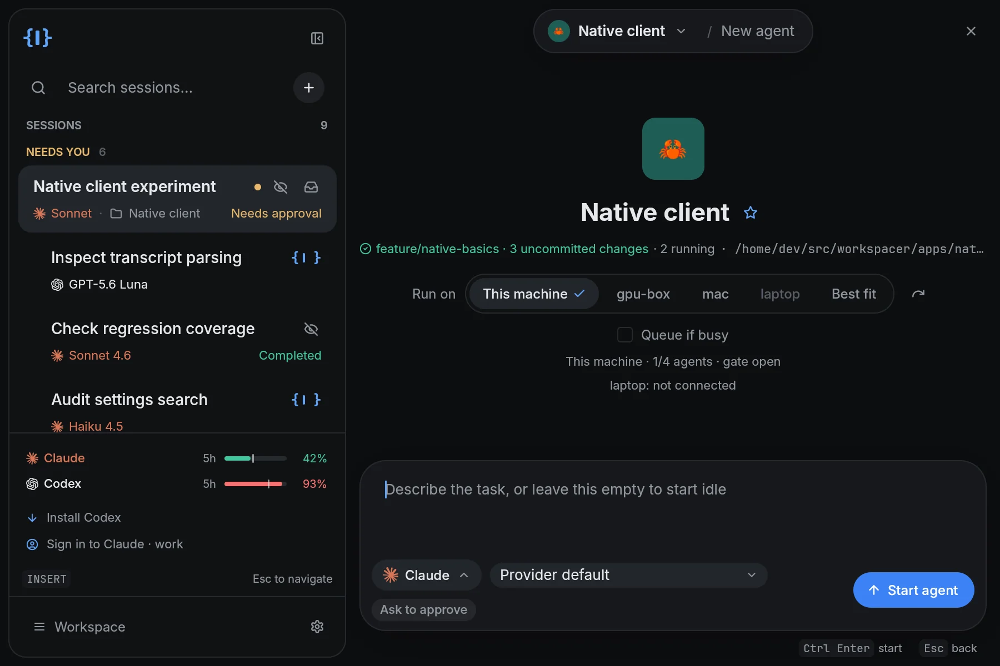
- The title capsule names the project, then "New agent". Clicking the project reopens the chooser.
- The page shows where the agent will work: the project's mark and name, and one line with what the hub reports about the folder (its branch and uncommitted changes, a plain folder, or a folder that does not exist), how many agents already run there, and its path.
- The composer holds the first message, a chip naming the agent, the model menu, any non-default options as chips, and Start agent.
Ctrl/Cmd+Enterstarts it andEscgoes back. The message is optional: leave it empty and the agent starts idle.
The page answers one question at a time. Clicking the agent chip swaps it for the agent's settings: Claude or Codex, effort, the access mode, the context window, an optional session name, and Agent setup. Clicking the project swaps it for the chooser, which lists the hub's pinned and recent projects and the folders your sessions run in. Type to filter by name or path, move with ↑/↓ and Enter, paste an absolute path, or use Choose folder…. Paths are always paths on the hub's machine.
A project can run any number of agents. Every row on the Projects page has New agent, and nothing launches until you confirm.
models
Claude choices come from the hub's family-alias catalog, one row per family with separate context-window choices. Codex choices come from the provider's own live catalog, as the installed CLI reports it. The menu marks the provider's default, and Custom model… takes an exact model ID or alias. If the catalog cannot be loaded, the error stays visible, and Provider default and Custom model remain available.
To change the model of a running session, open Model… (g m).
access modes
An access mode is the provider's own permission setting, chosen per launch:
- Claude: Ask to approve, Accept edits, Plan mode, or Full access.
- Codex: Ask to approve, or Full access.
Settings → Agents saves a separate default for each provider. Both start at Ask to approve. These are provider-native permissions; they are not a sandbox, and worktrees are not one either. Agents share your machine, its dependencies, ports and network.
names
Leave the session name blank and the hub writes one after the agent's first answer. Settings → Agents → Name sessions automatically turns that on or off and picks the model that writes the title. A name you type at launch, or later under Session details, always wins.
when a launch fails
A failed launch keeps the form, with a short reason under the composer. If the connection drops before the hub acknowledges the launch, refresh the session list before trying again, so you do not start the same agent twice. A first message the hub did not confirm is kept as a draft in the new session's composer.
other machines
When the hub knows about other hosts, a Run on row appears under the project: This machine, each peer, or Best fit, with Queue if busy. Choosing a peer lists that machine's folders. With a single machine the row is not shown. See Hosts.
agents that spawn agents
Every agent work{spacer} starts carries a skill called spawn-agent. With it, an agent can start another agent as its child, hand it one task, end its turn, and be woken when the child reports back. The child can run on a different provider: a Claude session can spawn a Codex child, and the other way round.
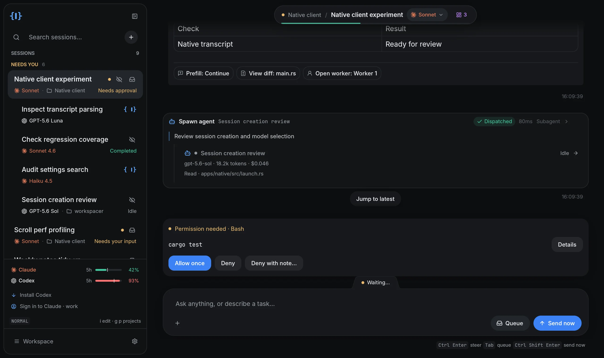
asking for one
Say it in the prompt: "have Codex review this", "spin up an agent to fix the flaky test while you finish the client". The skill tells the agent to:
- give the child one self-contained first message: the objective, acceptance criteria, the files or findings it has verified, constraints, the checks it expects, and what to report back;
- honor the provider or model you named. If you name nothing, your configured default applies;
- use a fresh git worktree for code changes that need isolation, and the current checkout for read-only work or when you explicitly want shared edits;
- end its turn after spawning and not poll;
- check the child's reported outcome before presenting the work as done, and never widen the child's task or authority beyond what you asked for.
The skill is a short markdown file, apps/desktop/assets/skills/spawn-agent/SKILL.md in the repository. It is handed to each session at launch. Nothing is written into your project.
what a child is
A child is a full session with its own conversation, on its own CLI. It nests under its parent in the sidebar. In the parent's transcript it shows as a compact card under the tool call that dispatched it, with its status, model, tools, tokens, estimated cost and elapsed time. Selecting the card or the sidebar row opens the child.
Provider-native subagents (Claude's and Codex's own) appear the same way with a different icon. Selecting one opens a read-only transcript under its card, because they are not work{spacer} sessions.
wakes
The parent does not watch its child. work{spacer} sends the parent a message when the child finishes, when it is blocked on an approval, a question or a decision it cannot make, when it reports progress, and as a catch-up if a finish was missed. The wake renders as a card naming each child, how it ended, and a link to open it. A failed child says why.
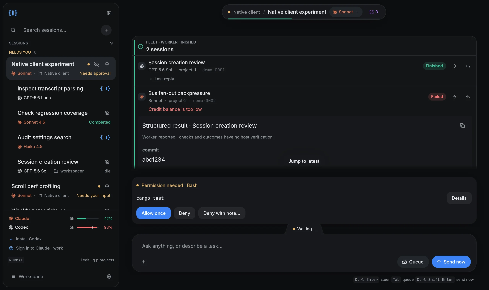
Wakes go to the direct parent only. When a child is blocked on an approval or a question, you can answer it yourself in the child's conversation; the parent is woken too, and may answer if the decision is within its own task.
children and approvals
By default a child asks before privileged actions like any other agent. Settings → Agents → Child agents start with full access changes that for children whose parent is one of the hub's own sessions: a new child then skips its provider's approval prompts (Claude in bypass-permissions mode, Codex with full access). It is off unless you turn it on, it is a setting of the hub and so applies to every client of that hub, and it never changes a session that is already running.
the other skills
The same bundle carries three more skills for ordinary agents:
project-briefkeeps<project>/.workspacer/brief.md: one line at a time under Now, Direction or Recently, so the next agent in that project starts with what the last one learned.scheduled-jobswrites a job spec and proposes it for you to approve.workspacer-response-cardslets an agent answer with a structured card (a table, a checklist, a review summary) instead of a wall of prose.
continue with another provider
Continue with Codex… (or Claude…) in a session's title bar hands its work to a new agent of the other provider. The hub writes a brief, and the successor starts in the same folder with a takeover message staged in its composer for you to read and send. You choose who writes the brief: the source agent itself (it takes one turn), a cheap model summarizing the conversation, or the hub's mechanical digest. Start fresh from a summary is the same thing with a new agent of the same provider. It is offered on a session that has sat idle long enough that resuming it would mean re-reading its whole context at full price.
A handoff is a new agent reading a file. It does not move the provider's session or its private context, and it never stops or rewrites the source. The same button appears on the card that tells you an account has spent its usage window.
the conversation
The conversation is the main workspace. Everything else opens beside it or over it, and none of it sends or discards what you were typing.
reading it
- Tool calls are individual cards you can expand: the command or read, syntax-highlighted, with before/after or patch previews for edits. Results attach to the call that produced them, failures included.
- Thinking is a quiet collapsed line above the reply. Click it to read the model's shown reasoning.
- The task list (the agent's own plan or to-do list) is pinned under the title as Tasks n/m done with the running step, and folds to one line.
- Changed files are summarized per turn, with a link into Changes.
- Links work. Web links open your system browser. File paths, in prose or in tool output, open the file at that line. Commit hashes open Changes on that commit. Files are read by the hub on the machine that runs the session, so a remote hub's paths are never opened on your own disk.
- Opening a conversation lands on the latest message and follows new output. Scrolling up pauses that, and Jump to latest resumes it.
A live conversation keeps at most 2,000 rows and 4 MiB of text in memory. Older history is still there: History pages through everything the hub retains.
approvals
When an agent needs permission, a card docks above the composer with what it wants to run and three buttons: Allow once, Deny, and Deny with note…, which denies the tool and hands the agent one line from you so it can change course.
- When the agent offers session-scoped grants, the card shows one button per grant in the agent's exact words, such as Always allow Bash(npm test:*) this session. There is no generic "allow everything" button.
- When Claude asks to leave plan mode, the card renders the plan as a document with Approve plan and Keep planning….
- A decision is bound to the card you saw. If the request changed before your click arrived, the hub refuses it, nothing is resent, and the current card is shown instead.
questions
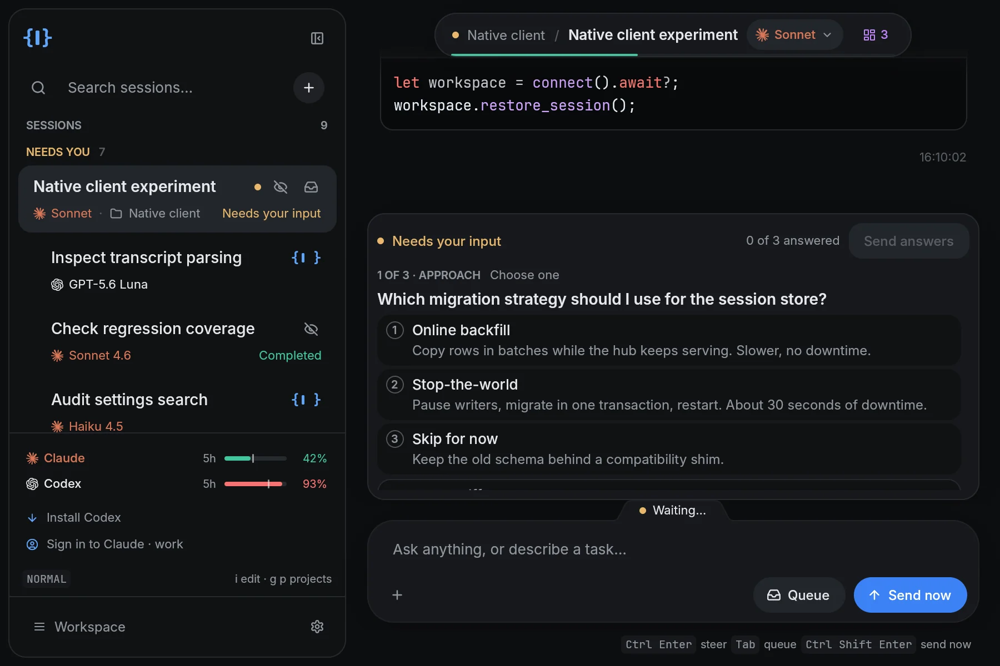
Questions dock above the composer as one card. Each shows whether to choose one or any, numbered or checkbox options with their descriptions, and a field for a typed answer. Nothing is sent until every question is answered and you press Send (or Ctrl/Cmd+Enter inside the card).
Codex can also ask questions that do not block. Those are a card in the transcript where they were asked, and the agent keeps working while you answer. When an MCP server asks for information, the card says which server is asking, and nothing goes to it until you press Submit.
sending while the agent works
Idle, every send key is an ordinary send. While a turn is running, or an approval or question is open, you have three choices, and the hint line under the composer names the keys:
- Steer (the normal send key): the message goes now and the agent reads it at its next step.
- Queue (the button, or
Tabwith a draft): the message waits on the hub's queue and is sent when the turn ends. It is never sent over an open approval or question. - Send now (
Ctrl/Cmd+Shift+Enter): the agent reads it immediately. Claude sets background work aside; Codex is interrupted and takes it as the next turn.
While anything is queued, a panel above the composer lists the entries. You can reorder, edit, send or remove each one, or clear the lot. The queue belongs to the hub, so every client of that session sees and edits the same one.
By default Ctrl/Cmd+Enter sends and plain Enter adds a line. Settings → Keyboard → Send messages with switches the composer to Enter-to-send, with Shift+Enter for a new line.
slash commands
Typing / at the start of the composer opens a menu of the session's own commands: Claude's commands and skills, or Codex's skills. Type to filter, move with ↑/↓, insert with Enter or Tab, close with Esc.
attachments
Attach… takes images and PDFs up to 8 MiB, and Ctrl/Cmd+V pastes a screenshot from the clipboard. On Claude stream and Codex sessions, images reach the agent as images, up to eight per message. Larger images, PDFs, and attachments on other sessions are sent as a file path the agent reads. A message with images attached cannot be queued.
context and history
Session details (g e) has a Context and history card with Compact context and Fork session. At 90% context the title offers Compact now. Hovering one of your own messages on a Claude stream session offers Rewind files to here, which previews what would change before it restores anything.
When the agent runs work beside the conversation (a background shell such as a dev server, an async subagent, a workflow), a chip in the title shows how many are still running and opens a panel with each one's status and log.
When an account has spent its 5-hour or weekly window, a card says which window and when it resets, and offers to continue with the other provider or wait.
The controls you see depend on what your connection may do. A connection with a read-only or triage token has the controls it cannot use hidden, rather than refused after a click. The app's own embedded hub, and an owner token, can do everything.
views
Each of these opens from the title bar, the sidebar or a key, and Esc returns to the conversation with your draft intact. The keys are the Normal-mode ones.
changes g d
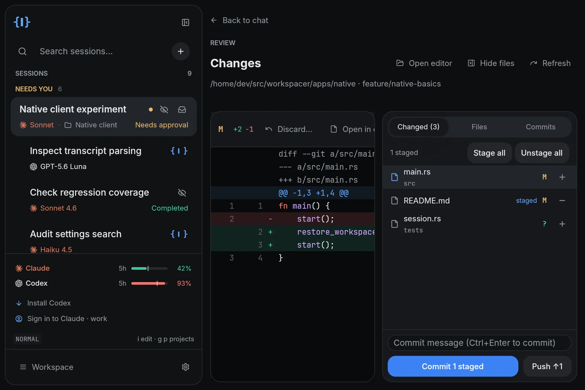
A git review of the session's repository. The diff fills the page with old and new line numbers; the files sit on the right.
- Changed lists
git status. Each row's +/− stages or unstages that file, and Stage all/Unstage all cover the repository. The box below commits what is staged. - Push appears when the branch is ahead of its upstream. A branch with no upstream yet, such as an agent's fresh worktree branch, offers Publish branch. Pull appears when it is behind, and only fast-forwards.
- Discard… throws away one file's unstaged changes. It arms on the first click and acts on the second.
- Files shows the whole project tree with changed files marked. Commits lists the last 50 commits, marks the ones not pushed, and shows any one's patch.
This is the working tree's state, edits outside the selected session included. It is not a claim about which agent changed what. When the agent you are reviewing finishes a turn, the status is read again.
terminal Ctrl/Cmd+` or g t
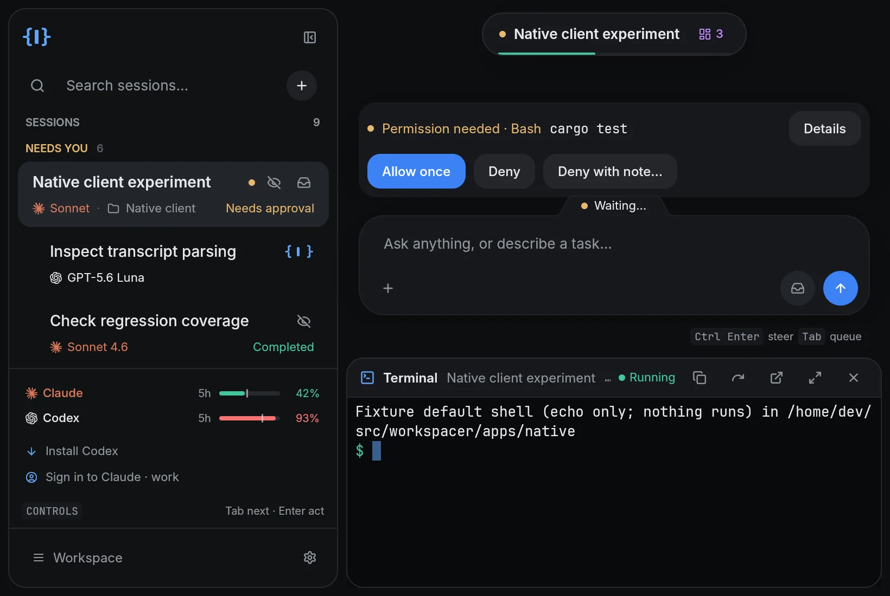
Each agent has one interactive shell of its own, started by the hub as a login shell in the agent's folder and docked under the conversation. Hiding the terminal keeps the shell running, and reopening it re-attaches to the same one. Paste is Ctrl+Shift+V.
files Ctrl/Cmd+Shift+E or g f
An editor on the session's folder, with a file explorer beside it. Source is syntax-highlighted, searchable (Ctrl+F) and editable; Ctrl/Cmd+S saves through the hub, and only if the file still holds what the editor loaded, so you cannot silently overwrite an agent's edit. Markdown opens as a rendered document with a Preview / Source toggle, and images open as images. Git-ignored entries are hidden until Show ignored. Next to a wide enough conversation the viewer docks on the right; in a narrow window it is a sheet over it, and Pop out moves it to its own window.
history g h
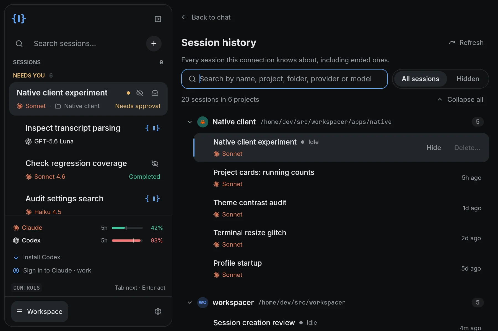
Every session the hub knows, ended ones included, grouped by project and ordered by latest activity. The search field matches name, project, folder, provider, model and id. Open reads an existing conversation; Resume opens a launch form with the session's identity and known model, and nothing starts until you confirm. Claude and Codex sessions can be resumed.
Session… (g e) renames a session, archives or restores it, and offers a confirmed End session. Archiving hides a session from the sidebar; it does not stop the agent or delete history.
projects g p or Ctrl/Cmd+P
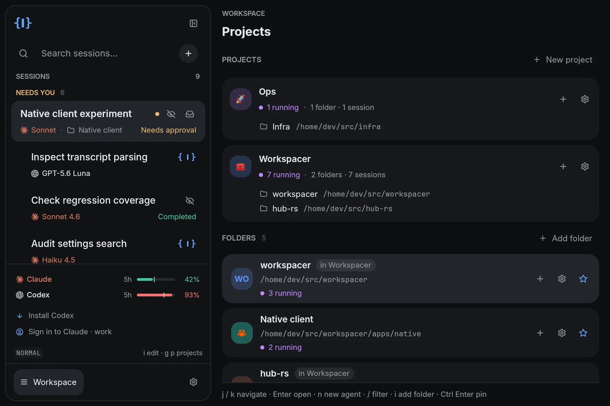
Projects are the hub's shared registry, the projects section of its config.yaml: pinned ones first, then by when they were last used, plus the folders your sessions run in. Pin project saves a path without creating a folder or launching anything. The palette button on a row sets the project's display name and icon, and those show everywhere that project appears, in every client of that hub.
Opening a project filters the sidebar to its sessions. All clears the filter. n on a highlighted row opens New Agent on that folder.
jobs g j
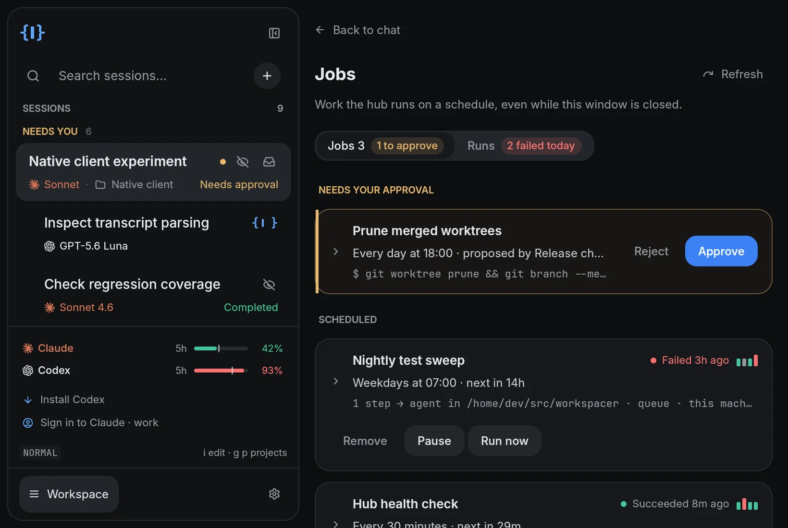
Work the hub runs on a schedule. There is no form here: you ask an agent for a job, and what it proposes waits at the top of this view, switched off, until you approve it. From here you approve, pause, run or remove jobs and read their history. The jobs section is the full reference.
hosts g o
A card per host: this hub first, then any peers it is linked to. Each shows memory and disk pressure, its free slots, whether its work queue is accepting work and why not, and the items queued on it, with Cancel on the queued ones. The owner can edit the limits here. With one machine it is a single card.
keys and navigation
Vim-style navigation is on by default. The sidebar shows NORMAL when navigation has the keyboard and INSERT when a text field does. Text fields keep ordinary editing: this is app navigation, not a modal text editor. v in Settings turns it off, and the Ctrl/Cmd shortcuts below work either way.
| keys | action |
|---|---|
Esc | leave a text field; press again to return to the conversation |
j / k | next / previous session, project or settings category |
gg / G | first / last session or project |
i | focus the composer (or the search or path field of the page you are on) |
/ | focus the sidebar filter, or settings search in Settings |
g c | conversation |
g p / h | projects |
g s | settings |
g d, g h, g j, g o | changes, history, jobs, hosts |
g f, g t | files, terminal |
g e, g m, g a | session actions, model, agent setup |
Enter / l | open the highlighted project |
n | new session in the highlighted or open project |
Ctrl+U / Ctrl+D | scroll the conversation by half a window |
t / v / a in Settings | cycle theme / toggle Vim / switch default agent |
These work whether or not Vim navigation is on:
| keys | action |
|---|---|
Ctrl/Cmd+N | new session |
Ctrl/Cmd+K | open the session list with its search focused |
Alt+Up / Alt+Down | previous / next session |
Ctrl/Cmd+L | focus the composer |
Ctrl/Cmd+Enter | send, or start the agent |
Ctrl/Cmd+Shift+Enter | while the agent works: send now |
Tab | while the agent works, with a draft: queue it |
Ctrl/Cmd+P | projects |
Ctrl/Cmd+, | settings |
Ctrl/Cmd+Shift+E | files |
Ctrl/Cmd+` | show or hide the agent's terminal |
Ctrl/Cmd+S | save the file in the editor |
Ctrl/Cmd+R | refresh |
Tab / Shift+Tab, Enter or Space | move between controls, and activate the focused one |
the sidebar
Drag the sidebar's right edge to resize it, or double-click the edge to reset it. The toggle beside the logo collapses it to a rail of icons; hovering a session there shows its name, project, provider and status. The search field filters by session name, path and project.
A tall window, such as a portrait monitor, gets a tall layout: the file viewer and background tasks dock below the conversation, and the sidebar starts as its rail, with each session's initials in a ring colored by its state. Settings → Appearance → Window layout chooses Auto, Wide or Tall.
attention and notifications
The point of the sidebar is that you do not have to go and look. Sessions are grouped by what they need from you, and the group at the top is the one that matters.
- Needs you comes first: sessions holding an approval or a question, each labelled with which (Needs approval, Needs your input).
- Working sessions follow, then the rest, with what they last did (Finished, Completed, Idle).
- Children stay under their parent wherever the parent sorts.
- The bottom of the sidebar shows each signed-in provider's usage window as a small meter.
The title of a session carries its own status too: a running hook, failed MCP servers (which open a card where you can reconnect them), fast mode, a context notice near the limit.
notifications
When the window is not active, the app raises an OS notification on three transitions: an agent finished, an agent needs approval, an agent asked a question. Connecting to a hub does not replay old alerts. Clicking a notification brings the window forward on that session on Linux and Windows; macOS alerts do not report clicks. Settings → Workspace has the notification preferences, and your OS settings still govern delivery.
remote and other clients
The app's hub is a real hub. Other clients can attach to it, and the app can attach to someone else's. Nothing is reachable from off your machine until you turn it on.
your phone, over Tailscale
Settings → Remote shares the connected hub with your phone over Tailscale. Both devices must be signed in to the same tailnet. Nothing is published to the internet.
- Tailscale HTTPS runs
tailscale servefor the hub's port on the hub's machine, so the hub answers athttps://<node>.ts.net. HTTPS is what lets the phone client install as an app. Turning it off runstailscale serve reset, which removes every Serve handler on that machine, so the app asks first. - Pair a phone creates a pairing link for one access level, and shows it as a QR code and a link you can copy.
- Pairing links lists every link created on that machine. Revoking one disconnects that phone immediately.
The three access levels:
- Read-only: see the sessions and read their conversations.
- Triage: read-only, plus approve, answer, chat and interrupt.
- Full control: everything.
All of it runs on the connected hub, as its owner. In local mode that is this app. A hub you reached with a pairing token rather than the owner token cannot change sharing. If Serve cannot be changed yet, the panel shows the one-time fix: on Linux, sudo tailscale set --operator=$USER.
the phone client
The pairing link opens the phone client at /m. It shows the hub's sessions as cards with their status, lets you clear approvals and questions inline, and opens any session's transcript with a composer.
The phone client was built alongside the Electron app, so some of its tabs are about features the native app does not have a launcher for (the Fleet Manager's flows and briefs). The legacy docs describe every tab. Push notifications from it are still being hardened and are not something to rely on.
attach the app to another hub
The native app is a client too. Point it at a hub on another machine and it shows that hub's sessions:
wks-native --bus wss://my-host/bus --token-file /path/to/tokenAttached this way, the app owns nothing: closing it does not stop the hub or its agents. Paths in New Agent, Projects and the file viewer are paths on the hub's machine. The app lists the connected hub's own sessions. Peers that hub is linked to show up as places to run a new agent and in Hosts, not as sessions in the sidebar.
a hub with no window: workspacer serve
The same backend runs on its own, for a home server, a VM, or a box you only reach over Tailscale. The command is workspacer serve (the executable is workspacer-rust). It ships in the standalone server bundle on the releases page (workspacer-server-<os>-<arch>) and in the Windows native installer; the Linux native package contains only the app.
workspacer serve # session engine, bus and MCP tools in one process
workspacer status # what is running on the workspacer ports
workspacer token create --scope view|triage|operator [--label "dana's phone"]
workspacer token list
workspacer token revoke <token-or-prefix>- It binds loopback only by default. Reaching it from another device is an explicit choice,
workspacer serve --host <address>, and it is always token-gated. Keep it on a private network such as a tailnet, never the open internet. - It prints its endpoints and a pairing credential when it is ready.
--jsonmakes that machine-readable. - It will not silently mint a new identity. If its token file has gone missing while the rest of its state is still there, it refuses to start instead of adopting a new token that would lock out every phone and client already paired. Restore the file, or accept a new identity deliberately with
--allow-new-token. - It runs in the foreground, so put it under systemd or tmux. An interrupt shuts down the backend it owns.
scoped tokens
You do not have to hand the owner credential to every device. A scoped token is enforced on every call to the bus:
view: read-only. Session lists, snapshots, transcripts, event streams.triage: view, plus acting on attention: approve or deny, answer, send a message, interrupt.operator: everything.
A method outside a token's scope is denied, and so is an unknown method. A revoked token is also re-checked on connections that are already open. These are the same three levels the Pair a phone panel offers.
more than one machine
A hub can link to another machine's hub, so agents can be started and queued on either from one place. Peers are named in a peers.json in the hub's config directory, each with a name, a URL and a token minted on the other machine:
[{ "name": "work-pc", "url": "ws://work-pc:7895/bus", "token": "<that token>" }]The token you mint is the ceiling on everything the link can do. Use your tailnet hostname, as with everything else here. The legacy docs go deeper on federation, on remote worker nodes that can be switched off between uses, and on the browser clients (/remote and /app) that the standalone server also serves.
appearance and settings
Settings (Ctrl/Cmd+, or g s) has a category rail beside grouped cards: Appearance, Typography, Workspace, Remote, Agents, Chat, Keyboard, About. The search box (/) filters every preference across categories.
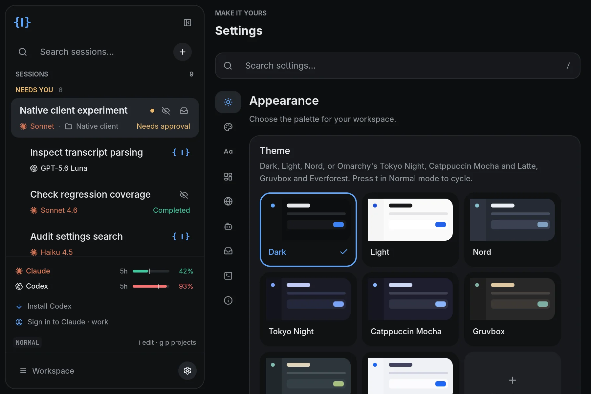
themes
Eight themes ship: Dark, Light, Nord, and five ported from Omarchy's stock themes, Tokyo Night, Catppuccin Mocha, Catppuccin Latte, Gruvbox and Everforest. Switching applies immediately, to the chrome, the conversation and the code colors, without touching sessions or drafts. Omarchy itself is not required, and your system theme is never read or changed.
Match system follows the system's light or dark setting and keeps one theme for each: the one you pick while the system is light is used for light, and the one you pick while it is dark for dark.
Settings → Custom themes forks the theme in use so you can change any palette color and the corner shape. Themes made in the Electron app are not imported.
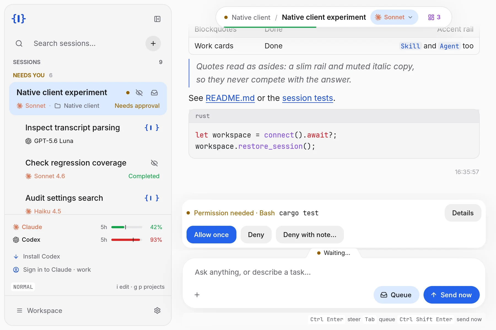
typography
Settings → Typography picks the interface and code fonts from the bundled defaults and the fonts installed on your device, and the text size. Inter and JetBrains Mono are embedded, so a fresh install has both. Changes apply immediately.
what is saved where
Two kinds of setting live in two places, and it helps to know which is which:
- Preferences of this device: theme, fonts, keyboard preferences, sidebar width, window layout. They are saved in
workspacer/native-settings.jsonandworkspacer/native-theme.jsonunder$XDG_CONFIG_HOME(otherwise~/.config), or%APPDATA%on Windows. They do not affect the hub or running agents. - Settings of the hub: the project list, automatic session names, whether children start with full access. They are read from the hub each time Settings opens and changed there, so every client of that hub sees the same thing. See configuration.
jobs
A job is work the hub does on your behalf without you being there: spawn an agent with a prompt, run a shell command, or call a bus capability, on an interval, at a time of day, once, or on demand. Jobs live in the hub, not the window. Under a headless workspacer serve they keep firing with nobody attached. The native app in local mode is its hub, so its jobs run for as long as the app is running, which includes sitting in the background with keep-running on. You create and change jobs by asking an agent, in any chat: say what you want to happen and when, and the agent writes the spec and proposes it (see below). There is no form for it. You watch them in the Jobs view in the native app (g j), or in Settings → Jobs in the Electron app, where each row shows its next run, its last result, and an expandable run history, and where you approve, pause, run or remove them. There is also workspacer jobs in the terminal.
The paths in this section are a standalone hub's. The native app's own hub keeps the same files in its own directory: see configuration.
triggers
Every job has exactly one trigger:
{"kind":"interval","everyMinutes":60}: every N minutes (minimum 1). Intervals re-anchor from now whenever the hub restarts.{"kind":"daily","at":"09:00","days":[1,2,3,4,5]}: at a time of day, hub-local.daysis a weekday mask with0= Sunday; omit it for every day.{"kind":"once","once":"2026-09-01T09:00:00Z"}: an RFC3339 timestamp. The job disables itself when it fires, so a failed run can't refire forever. A time that has already passed still fires once, because "run this at 9" set at 9:05 shouldn't silently mean never.{"kind":"manual"}: only ever runs when you press Run now.
The scheduler ticks every 30 seconds, so triggers are minute-precision by design. A due time that passed while the machine was asleep fires once on wake and then re-anchors, with no catch-up storm. If a job is still running when its next fire comes due, that fire is skipped, never queued, because a backlog of queued agent spawns would burn quota for nothing.
actions
And exactly one action:
- spawn: start an agent and send it a prompt.
cwdandpromptare required,provider,model,effortandpermissionModeoptional. The agent appears in your fleet like any other. - shell:
command(run through/bin/sh -c, orcmd /Con Windows) and an optionalcwd. - call: one bus capability,
methodplus optionalparams.
A job's spawn goes out over the bus exactly like a remote spawn, so model ceilings and provider-native permission choices use the same path. Workspacer adds no separate child-grant clamp. Runs are capped at 15 minutes, and a failed run raises a notification.
run code first, then hand it to the agent
A spawn action can run context steps before the agent exists. Each step is a shell command (or a bus call) whose output is substituted into the prompt at {{output}}, or at {{output.1}}, {{output.2}}… when there are several. If the prompt mentions neither, the outputs are appended as fenced blocks rather than dropped. Up to four steps, each capped at 12,000 characters (an oversized one is elided in the middle, so both what ran and how it ended survive).
A step can also call the whole thing off, which is the more useful half. Each one carries three optional guards:
skipIfEmpty: no output means nothing happened, so don't wake a model. For acallstep, JSON's several spellings of nothing count as empty too ({},[],null,"").skipUnlessMatch: a regular expression; the agent spawns only if the output matches. An invalid pattern is refused when you save rather than at 3am.ignoreExitCode: treat a nonzero exit as data rather than failure, for the guards that report "nothing found" that way (grep, most test runners). Only an exit code is forgiven. A timeout or an unstartable command still fails the run loudly.
Nothing is spawned until every step has run and every guard has passed, so a quiet night costs a shell command instead of an agent, a model call and a session to clean up. A guarded run records as skipped with the reason and, unlike a failure, stays silent, since a guard that fires nightly must not notify nightly. A healthy guarded job's history is mostly skips with the occasional real run in it.
{
"name": "Failing tests → agent",
"enabled": true,
"trigger": { "kind": "daily", "at": "07:00", "days": [1, 2, 3, 4, 5] },
"action": {
"kind": "spawn",
"spawn": {
"cwd": "/home/you/work/api-gateway",
"provider": "claude",
"prompt": "Last night's test run:\n\n{{output}}\n\nTriage these failures and propose a fix for each.",
"context": [
{
"kind": "shell",
"shell": { "command": "go test ./... 2>&1 | tail -60" },
"ignoreExitCode": true,
"skipUnlessMatch": "FAIL"
}
]
}
}
}Most mornings that job runs go test, sees no FAIL, and stops without spending anything. On the mornings something broke, an agent is already reading the failures when you sit down.
acting on an idle fleet
The hub publishes one read-only signal, fleet.quiescence, answering whether this machine's fleet is genuinely at rest. It exists so a job can act on "nothing is happening here" without you having to reimplement the safety logic in a shell script. Read it from a terminal or a script with workspacer fleet quiescence, which is exit-code gated: 0 at rest, 1 not at rest, 2 could not ask. Those last two are different answers and only the first two are knowledge, so a script that acts on success should never treat 2 as 1.
The rule is refuse when unsure. It answers yes only when every one of these holds, and has held continuously for a dwell of several minutes:
- every session that has not stopped is ready for input. A session that is spawning or resuming has not reported a state yet and does not count as idle;
- no session has a background task running, which is what a
run_in_backgroundshell (a dev server, a watcher, a poll loop) rides on: the session mode deliberately stays idle for those, so the count is the only sign they exist; - nothing is waiting on a permission decision or an answer to a question;
- no terminal is open. Nothing anywhere in work{spacer} tracks whether a terminal's shell is running a long command, so a live terminal blocks on presence alone, and keeps blocking until it is closed;
- no bus client is in use. Connection presence is not the test, or a phone with the mobile client parked in a background tab would hold the machine up forever; a client counts as in use until it has been silent for several minutes;
- no job is due to fire soon, and none is running;
- every federated peer is reachable and its own sessions are at rest. A peer that cannot be reached blocks: unreachable is unknown, not quiet.
When the answer is no it comes with a blocker per reason, each naming the session, job or peer responsible and saying what it is doing, so an unexpected no is something you can go and deal with rather than a bare false.
Two limits worth knowing. A shell job does not count as a job about to fire, because a shell action is how you run this check, and a poller that counted itself would block forever; work you need protected belongs behind a spawn or call action. And an agent whose process has wedged mid-turn never reports its turn ending, so it reads as busy indefinitely and holds the machine up. That is the direction this is meant to fail in: it costs uptime rather than work.
Wiring it up is an ordinary job. This check powers nothing down by itself; the script is yours, and what it does with a yes is entirely your call. The one machine work{spacer} can switch off on its own is a registered remote worker node, and that is a button somebody presses rather than anything a quiescence answer triggers.
{
"name": "Power down when the fleet is quiet",
"enabled": true,
"trigger": { "kind": "interval", "everyMinutes": 5 },
"action": {
"kind": "shell",
"shell": { "command": "workspacer fleet quiescence --quiet && /opt/wks/power-down.sh" }
}
}Poll as often as you like; the check is cheap and the dwell, not your polling interval, is what decides how long the fleet must have been quiet. Use --json in a script that wants the blockers, and log them: the fastest way to find out what is really keeping a machine up is a week of "not at rest" reasons.
Ask an agent for this one. Tell it the path to your own power-down script and it proposes the job above with that path in place of /opt/wks/power-down.sh; like every proposal, it arrives switched off until you approve it. An agent without a script path from you should not propose it at all, because a job that runs a script nobody has written is not a job.
writing a job spec by hand (or having an agent write one)
There is no editor form: a job is just JSON, and the shape below is the whole language, enough for you (or the agent you ask) to write one from scratch. Anything the hub doesn't accept is refused at save time with a message naming the problem. The // notes below are annotations for you, not syntax: JSON has no comments, so strip them.
{
"id": "", // omit or leave blank to create; the hub mints one
"name": "Human-readable name", // required
"enabled": true,
"proposedBy": "", // set by the hub on an agent's proposal;
// while non-empty the job never runs
"replaces": "", // on a proposal: the id of the job it would change
"host": "", // "" runs inline; local | any | a peer name
// submits a work-queue item (spawn/shell only)
"priority": 0, // queue priority, higher first; only with host
"trigger": {
"kind": "interval", // interval | daily | once | manual
"everyMinutes": 60, // interval: >= 1
"at": "09:00", // daily: HH:MM, hub-local
"days": [1, 2, 3, 4, 5], // daily: 0 = Sunday .. 6 = Saturday; omit = every day
"once": "2026-09-01T09:00:00Z" // once: RFC3339
},
"action": {
"kind": "spawn", // spawn | shell | call
"spawn": {
"cwd": "/abs/path", // required
"prompt": "What the agent starts with", // required
"provider": "claude", // claude | codex | copilot | opencode | pi
"model": "", // blank = the provider's default
"effort": "", // provider effort level, if it has one
"permissionMode": "", // provider-native permission mode
"context": [ // optional, max 4, run before the spawn
{
"kind": "shell", // shell | call
"shell": { "command": "git log --oneline -20", "cwd": "" },
"call": { "method": "sessions.list", "params": {} },
"skipIfEmpty": true, // no output -> skip the run, spawn nothing
"skipUnlessMatch": "", // regex; spawn only on a match
"ignoreExitCode": false // nonzero exit is data, not failure
}
]
},
"shell": { "command": "…", "cwd": "" },
"call": { "method": "…", "params": {} }
}
}Fill in only the branch you're using: one trigger.kind and its fields, one action.kind and its payload. A context step likewise carries either shell or call, matching its own kind. The rules the hub enforces:
- a job needs a
name; a spawn needscwdandprompt; a shell needs acommand; a call needs amethod; - a
call, as an action or as a context step, may not targetjobs.*(that would recurse into the job system itself) orhub:<peer>/(job state doesn't federate; to run a spawn or shell job on another machine, sethostas described below); - at most four context steps, and a
skipUnlessMatchthat doesn't compile is rejected; hostis"",local,anyor a federation peer name (letters, digits,-,_),priorityis an integer, and acallaction may not carry ahost.
running a job through the work queue
By default a job runs inline, the moment it fires. Set host on a spawn or shell job and it goes through the host work queue instead, which starts work only when a slot of its kind is free and the machine is not under memory, CPU or disk pressure. "host": "local" queues it on this machine; a peer name queues it on that federation peer (it must be configured, connected and dispatch-enabled); "any" picks the best eligible host, the same way queue.targets ranks them. priority (default 0) orders it in that queue, higher first.
Context steps still run here, first, and their output is rendered into the prompt before the item is submitted, so the guards still cost nothing when there is nothing to do. The run's history row then reads queued <item id> on <host>; the item itself is followed in the Hosts view. While an item this job submitted is still queued or running, the next fire records skipped, and if the peer holding it cannot be asked, that counts as still running. A submission whose outcome is unknown (the peer dropped mid-call) is reported as an error and is never retried by itself. A shell job queued on a peer is accepted there only when that peer was paired with its own host credential.
Specs are stored by the hub at <config-dir>/workspacer-hub/jobs.json, mode 0600, with run history beside it in jobs-history.json. They do not live in your library or your layout. See where everything goes for why the hub keeps its own directory. To install a spec written elsewhere: have an agent propose it, run workspacer jobs add -f <file>, or edit jobs.json yourself, which is the next section.
editing jobs.json by hand
jobs.json is a file you are meant to be able to open in an editor. The hub re-reads it by itself: the scheduler polls the file on the same 30-second tick it uses to fire jobs, so a saved edit takes effect within half a minute, on a running hub, with nothing restarted and no window open. It behaves the same under workspacer serve, because the watching happens in the hub rather than in any window.
- Open
<config-dir>/workspacer-hub/jobs.json. On Linux that is~/.config/workspacer-hub/jobs.json. If it does not exist yet, create it with{"jobs": []}and add to that. - Add, change or delete an entry in the
jobsarray, in the shape above. Save the file. - Wait up to 30 seconds.
- Check that it took.
workspacer jobs listprints each job with its next run; the Jobs view shows the same thing. A job you added by hand comes back with anidfilled in, and that is the hub telling you it has read your edit.
Three fields are filled in for you so you never have to type them: id, createdAt and updatedAt. Leave id out and one is minted; leave two rows carrying the same id, which is what copy-pasting a block gives you, and they are split apart. All three are written back into the file. The one thing not guessed for you is enabled, which defaults to false when it is missing, so a new job needs "enabled": true or it will sit there doing nothing.
A mistake costs nothing. If the file does not parse, the hub keeps the schedule it is already running, logs what was wrong, and looks again on your next save. The same holds if the file briefly goes missing, which is what several editors do while saving. A single row the validator refuses is dropped on its own, with a log line naming it, and the other jobs keep running. Stopping everything is therefore something you have to mean: a file that parses, with an empty array, {"jobs": []}.
Editing by hand and changing jobs from the app mix safely. Every hub write re-reads the file first, so approving or pausing one job from the app lands on top of what is on disk rather than on top of a snapshot from startup, and a job you typed into your editor a minute earlier is still there afterwards. Only the job you actually changed is re-anchored, so renaming one job does not quietly push every other interval job's next run forward.
Point at a script rather than inlining one. A shell action's command already goes through /bin/sh -c, so the tidiest thing to put in it is the path to a script: keep the script in ~/.workspacer/scripts/ and write "command": "~/.workspacer/scripts/nightly-tests". (On Windows the command goes through cmd /C, so write %USERPROFILE%\.workspacer\scripts\nightly-tests.) A script is a file you can run, diff and review on its own; a shell blob wedged into a JSON string is none of those, and its quoting is where hand-written specs usually go wrong. Nothing in the spec knows about that directory and nothing needs to: it is a convention, not a feature.
One more time, because it is the mistake that gets made most: JSON has no comments. The // notes in the reference block above are annotations for you. Copying them into the file makes it unparseable, and an unparseable file is a file the hub ignores.
jobs.jsonis executable configuration, and writing it is equivalent to writing a crontab. A shell action is a command run as you, on a timer, with nobody watching; a spawn action starts an agent the same way. No new capability is involved, since anything with a shell could already do this. Two things genuinely are new next to a session you are sitting in front of: it persists, and it runs unattended. Treat editing this file the way you treatcrontab -e, and be as careful about what you paste into it.
the command line
A spec written anywhere, by hand or by an agent you asked, becomes a real job with one command:
workspacer jobs add -f nightly-triage.json # or: … -f - to read stdin
workspacer jobs list # next run + last result per job
workspacer jobs show <id> # print one spec back as JSON
workspacer jobs history <id> # recent runs, newest first
workspacer jobs run <id> # fire it now
workspacer jobs approve <id> # arm an agent's proposal
workspacer jobs enable <id> | disable <id>
workspacer jobs remove <id>Ids can be shortened to any unique prefix. The spec is validated locally before it's sent, so a typo tells you what's wrong instead of failing as a connection error. Point it at another machine with --host/--hub-port, and at a specific credential with --token (it otherwise reuses the pairing token in your config dir). --json prints raw output for scripting.
agents write jobs; you approve them
Agents ship with a jobs skill, so in any chat you can ask for "a job that checks the nightly build every morning and wakes an agent if it failed" and get one. An agent with the workspacer tools at the operator tier can read your jobs (list_jobs, job_history), run or delete an existing one, and propose new ones (propose_job). It cannot install one. A proposed job is saved disabled and stamped with a proposedBy name; the hub refuses to schedule it and refuses run on it, and it stays that way until you approve it, in the Jobs view (proposals sort to the top with an Approve button) or with workspacer jobs approve. You get a notification when one arrives.
Changing a job works the same way. The agent proposes the whole new spec with "replaces" set to the existing job's id. Nothing changes until you approve it; then the job takes the new name, trigger and action in place, keeping its id, its run history and whether it was paused. Removing a job withdraws any change still waiting on it.
The reason for the split: a job is argv that runs unattended, on a schedule, indefinitely. Anything that talks its way into an agent, a poisoned README or a hostile issue comment, could otherwise buy itself a nightly foothold. There is no agent-facing tool for the ordinary write, so an agent's suggestion always lands in a review queue rather than in your crontab. Read the trigger and the action before approving; that click is the whole security boundary.
who can manage jobs
The jobs.* capabilities are host-authority only: the app as its hub's owner, a client on a full-control pairing, the workspacer jobs CLI, and operator-tier agent tokens. Plugin tokens and view/triage tiers are refused at call time and see no job tools at all. jobs.list is gated as tightly as the writes, because the list discloses your prompts and shell commands. Operator-tier agents are the half-exception described above: they hold the read side and jobs.propose, never jobs.upsert.
limit-aware routing
A subscription is a budget with a clock on it. If every agent you dispatch runs on the same premium model, you spend one provider's allowance to zero while a second sits idle, and you find out at the worst moment. Limit-aware routing is the hub's answer: it reads how much of each provider's allowance is actually left, resolves the kind of work you are dispatching into a concrete model and reasoning effort, and moves work away from a provider whose window is tight.
The mechanism is one indirection. Whatever dispatches work names a role (scout, implementer, reviewer, judge and so on). A matrix resolves the role to a capability (cheap, balanced, frontier …), and a profile resolves the capability to a real (provider, model, effort). Between those two steps the hub reads the live usage report and picks a routing mode that can move the capability up or down first. Nothing outside the matrix names a model, so when a vendor renames one you edit a single file.
This is the hub's, so it applies to every agent spawned through it, whichever client you use. Ordinary agents reach it through the spawn-agent skill, which uses it when role-based routing helps and otherwise leaves your configured default alone.
One bus method exposes it, routing.select, and it is read-only: it answers a question and starts nothing. An agent holding the workspacer tools at the operator tier sees it as select_model and passes the answer to spawn_agent itself. There is no UI for the matrix, and the reason is in the last paragraph of this section.
the matrix file
Everything below is one YAML file the hub owns, beside jobs.json:
<config-dir>/workspacer-hub/routing.yaml # ~/.config/workspacer-hub/routing.yaml on LinuxThe shipped matrix is compiled into the hub binary and written to disk on first run, comments and all, so the file you open is also its own reference manual. That copy is a starting point rather than the source of truth: your file is deep merged over the compiled-in defaults, key by key. Anything you leave out still resolves, and a release that adds a new role or capability works against a file you wrote months earlier. The merge cannot delete, which is deliberate for a policy file: to take an entry out of service write enabled: false rather than removing it.
Saving applies it. The hub hashes the file every 30 seconds, so a retuned threshold, a switched profile or a new ceiling takes effect within half a minute, on a running hub, with nothing restarted. A mistake costs nothing. A file that cannot be read, or that does not parse, leaves the running matrix exactly as it was and logs what was wrong, so a half-typed save cannot disarm routing. Every key of yours that changes a shipped default is named in the log, and so is every key that matches nothing in the defaults, which is where a misspelled block name turns up. Model ids are checked against what your installed CLIs actually serve, so a renamed model is reported at load rather than discovered at spawn time.
Delete the file and it stays deleted: a marker beside it records that the offer was made, and the hub keeps running on the compiled-in copy, so nothing breaks and you only lose the comments.
active_profile, and why mixed is the default
active_profile picks which profile resolves capabilities. Three ship:
mixed(the default) for people with both a Codex and a Claude subscription. Codex builds and diagnoses; Anthropic reviews and adjudicates.codex_onlyfor one Codex subscription.anthropic_onlyfor one Claude subscription.
mixed is the recommendation whenever both subscriptions exist, and it earns that for two separate reasons. It draws two allowances down in parallel instead of exhausting one. And it prefers a different model family for review: a reviewer from a different family does not carry the implementer's blind spots. The second reason holds even when nothing is scarce, which is why the recommendation is not only about capacity.
That preference is not a guarantee. Every capability under mixed names both families — one as the primary pairing and the other in an ordered alternatives: list — and when the primary cannot be used (its allowance is red, its provider is conserving, its row is switched off) the router takes the first alternative that can be and names the fallover in the decision's reasons. So a codex outage can legitimately land a mixed reviewer back on codex: the matrix prefers a different family for review and says so when it could not.
A single-family profile has nowhere to fall over to, and neither profile can rely on the pairing alone, so both compensate with freshness. Every profile sets fresh: true on its review capabilities, and in a single-family profile that flag is the only thing making the reviewer independent. fresh means the reviewer gets a new session: the ticket, the acceptance criteria, the diff, the relevant source and the test results, and not the implementer's reasoning history. A reviewer that inherits the implementer's chain of thought is not reviewing it.
The flag is enforced, not advice. A spawn that declares a role or a capability the active profile marks fresh: true may not also ask to resume an existing session: the hub refuses the call and says which session it would have inherited. It refuses rather than quietly dropping the request, because a dropped resume would start a new session the caller believes is a continuation. A spawn that declares neither a role nor a capability makes no freshness claim and resumes normally, and fresh: false on the profile you are actually using is honoured. Choosing what to hand a fresh reviewer instead is still the dispatcher's job.
what each block is for
The file's own comments cover every key. This is the map, so you know which block to open.
rolesmaps a kind of worker to a capability. These names are the vocabularyselect_modelaccepts. Edit it to change what a kind of work is worth without touching a model name. (supervisoris listed for completeness and is not consulted yet: the Fleet Manager's own model is picked in Settings before there is a manager to ask.)capabilitiesis the vocabulary itself. Adding a name here does nothing until every profile resolves it.capability_rankssays how strong each capability is, which the list cannot:revieweris listed afterfrontierand is cheaper than it. Only ceilings read these, and an unranked capability cannot be compared, so a ceiling clamps it rather than waving it through. Edit it whenever you add a capability.profilesresolves each capability to{ provider, model, effort, fresh, enabled }. Effort ladders are per provider and are not interchangeable (Claude takeslow|medium|high|xhigh|max, Codex takesminimal|low|medium|high|xhigh). This is the block you edit when a vendor renames a model.providersdescribes each provider's capacity, not its abilities:metered(only Claude and Codex publish an allowance), andwhen_unknown, the health to assume when nothing readable exists.enabled: falsehere holds a provider out entirely, and routing then refuses rather than quietly substituting another one.thresholdsholds the numbers that pick a mode, as configuration rather than constants in code: the health bands (yellow_at_used_pct: 70,red_at_used_pct: 90) and the three spend-down arms.forecast_weightsweights how much demand a ticket in each phase implies. Read the note below before tuning them.modesis the manual override, globally or per provider:auto | conserve | normal | spend_down. A per-provider entry beats the global one, exceptauto, which is a deferral rather than a verdict and falls through. To hold one provider out of a globalconserve, saynormal.mode_shiftsis what a mode does, keyed by mode and then by role.normalhas no block because therolestable already is the normal answer, and a role with no entry under a mode keeps its usual capability. That absence carries meaning: underconservethe scout drops tocheapwhile the fixer stays onbalanced, because demoting the role that repairs broken work is the demotion most likely to cost more than it saves.ceilingscaps what a spawn in a given directory may be given. Its own section is below.
A shift is allowed to move work across providers, which is the whole feature. When it does, the landing provider's capacity is read and judged in its own right first, and the move is refused if that provider is itself conserving. Moving work onto a constrained provider because a different one was constrained is worse than not moving it.
One honest note on forecast_weights. A caller that describes the work still ahead as phase counts gets it weighted, and the answer shows the arithmetic. Those weighted units do not become a percentage of an allowance, because no cost model behind that conversion exists yet, so a work-only forecast leaves demand unknown for the mode rules: it can neither promote nor conserve. The one form the mode rules act on is an explicit share of the allowance (forecastDemandBeforeResetPct), which a caller measured or asserts. Tuning the weights changes what is reported, not which mode fires. Three other request fields, difficulty, risk and decisionDensity, are accepted and recorded and are not yet acted on either.
when a usage reading is believed
A reading is used only when its reset time is still in the future at the moment of the decision. A window that has already reset yields unknown: never a percentage, never a remaining capacity, never a time-to-reset.
This rule is the heart of the feature, because a stale reading is wrong in two directions at once. A five-hour window that closed two days ago at 67% used still reports 67% used. Believed, that makes a provider whose allowance is completely fresh look two-thirds spent, and the router starts conserving capability nobody needed to conserve. At the same time, the reset time on that same row is in the past, so a rule phrased as "is the reset less than 90 minutes away" is trivially true of it, and the router simultaneously concludes the window is about to roll over and starts spending an allowance down against a reset that already happened. One stale row, both mistakes, in opposite directions.
So unknown is treated as a real answer rather than as a gap to fill in. It never quietly becomes healthy: three of the five providers publish no readable quota at all, and what to do about an unreadable provider is read from providers[].when_unknown rather than assumed. A decision reports the observed health and the assumed health as two separate fields, because collapsing them is how "we could not read Codex" turns into "Codex is fine" further down. Health is also folded from the worst applicable window, so a provider is not healthy on the strength of a fine five-hour window while its weekly one is nearly gone.
Nothing caches a verdict, only the document: a two-second-old usage report can contain a window that lapsed two days ago, so every window is re-judged against the clock at the moment it is used. The poll itself is dormant until something asks for a routing decision and winds down 15 minutes after the last one, so an install that never uses routing never polls.
ceilings: what a Fleet Manager may not raise for itself
A ceiling is the most a spawn started in a given project directory may be given, whatever the caller asks for. It is the answer to a specific question: an operator-tier agent can spawn workers, so what stops it granting them the strongest model and the widest authority in your most sensitive repo?
ceilings:
default: { max_capability: frontier }
/home/you/Work/some-client-repo: { max_capability: balanced }max_capability is the highest model capability a spawn there may resolve to. Legacy max_tool_scope values remain parseable but are ignored; supported agents receive ambient tools. Keys are absolute directories: an exact match wins, then the longest matching ancestor, then default.
Every agents.spawn that arrives over the bus passes the clamp, which means the web and phone clients, the MCP facade, a job, and a federated peer. A spawn asking for more is not refused outright: the excess is clamped and reported back in the spawn's own answer, so a manager learns its dispatch was narrowed instead of quietly getting less. The clamp also names the replacement model rather than deleting the refused one, because an omitted model is not a weak model, it is whatever the provider itself defaults to, one layer below where a ceiling can see. routing.select applies the same ceiling through the same code before it answers, so it never advises a model the gate would then take away.
The lookup happens on the resolved path, so a symlink pointing into a capped tree does not walk around its ceiling, and a directory that cannot be resolved at all gets the default row rather than no row. The max_capability check reads an ambiguous model at its strongest possible meaning, since a caller does not choose which reading the provider runs; naming an explicit effort narrows it to what you meant. And a ceiling value the file cannot read refuses the spawn rather than being skipped, so a typo cannot become the quietest way to delete the policy.
What the shipped default does. It caps the model axis at frontier for every directory with no entry of its own. Ordinary implementation and review work is untouched; frontier_plus and frontier_max sit above the default cap.
The Electron app's own spawn dialog is not model-clamped because that is a person at the machine clicking Spawn. A model ceiling is not a permission or filesystem sandbox.
what a judge gets by default
This is the first surprise most people meet, so it is worth knowing before you meet it. The judge role asks for frontier_plus, which the mixed and anthropic_only profiles resolve to Claude's Fable. The shipped default ceiling caps capability at frontier. Because routing.select is ceiling-aware, it returns the capped answer instead of advising something the gate would refuse.
So out of the box, a judge dispatch resolves to capability frontier, which under mixed is Codex gpt-5.6-sol at high effort. The answer still records that the role asked for frontier_plus, names the ceiling it was resolved under, and says so in its reasons, so the cap is visible rather than an unexplained downgrade. To get Fable for judging, raise the ceiling, ideally only where you want it:
ceilings:
/home/you/Work/critical-service: { max_capability: frontier_plus }Save, and the next tick applies it to both the advice and the gate.
the decision log
Beside the matrix, routing-decisions.jsonl is an append-only record, mode 0600. It carries two kinds of row joined by a decisionId: the decision (role, the capability asked for and the one granted, provider, model, effort, mode, the capacity picture it was judged against, the ceiling, and the reasons) and the spawn that acted on it (what was declared, the resolved directory the ceiling was looked up on, the caller's tier and credential fingerprint but never its token, and what the clamp took away).
It answers "why did this worker come up on that model" a day later, it is the only place a headless machine records what its workers were, and it is the measurement that will eventually give the forecast weights real units. A spawn's prompt and account are deliberately not in it, and the directory is not in the routing.decision event either, since that event reaches a view-tier phone while the file stays 0600 on the hub. Past 8 MiB the file rotates to .1 and a fresh one starts. A disk that cannot be written complains once and routing keeps deciding.
checking it works
Watch the log fill. Nothing consults routing on an idle install, so an empty file means nobody has asked rather than that something is broken. Ask for one decision, then read the last rows:
tail -n 2 ~/.config/workspacer-hub/routing-decisions.jsonlA decision row appears at once; a spawn row appears when something spawns, carrying the same decisionId if it quoted the answer. The hub's own log is the other half: on boot and on every save it prints the file it loaded, the active profile, and each of your keys that changes a default.
Run the harness, from a checkout: make test-routing-harness. It starts a real hub against a fake usage daemon serving states you cannot reproduce on demand (a stale window, a window resetting exactly now, a provider answering 403, providers absent from the report) and asserts that stale readings come back unknown instead of choosing a mode, that a capped directory caps the advice and the spawn identically, and that a symlink walks around neither.
There is deliberately no UI for the routing matrix. Routing exposes no write capability over the bus, and the hub's state directory is refused to agent file writes, which is exactly what makes ceilings a ceiling: an operator-tier Fleet Manager can read a routing decision and cannot raise its own cap. Editing the matrix is a person with a text editor, and that is the property being kept.
mcp, plugins, and the tui
Three ways past the window: let an agent drive the hub over MCP, load plugins that add tools, or run the terminal client. All three are the hub's doing, so they work the same whichever client you look through.
the work{spacer} tools (MCP)
The hub exposes itself to agents as MCP tools. Every supported agent work{spacer} starts receives them automatically, along with the tools of every enabled plugin: there is nothing to configure and nothing to paste. This is what makes spawning work. spawn_agent is one of these tools, and the wakes come back over the same connection.
The driving set:
list_agents, the running agents with their state, usage, and any pending asks.get_transcript, read a session's conversation.spawn_agent/create_terminal, start a new agent or shell.send_message, send a prompt to an agent.approve/answer, resolve a permission prompt or answer a question.signal/terminal_input, interrupt or stop an agent, or type into a shell.notify, raise a notification.
The full catalog is about a hundred tools: session snapshots and conversations, projects and config, briefs, jobs, routing, file and search access. An agent can call the help tool for any of them. Each session's token identifies it and is revoked when the session ends; the provider's own permission mode remains the boundary on what the agent may execute. Pi is unsupported because it has no MCP client.
Callers with no token get nothing. The MCP endpoint listens on loopback over plain HTTP (port 7897 by default), and loopback is reachable by every other process and user account on the machine. So a request that presents no credential is answered with 401, not with your sessions. Agents you start are unaffected, because each carries its own per-session token.
To point your own MCP client at it, mint a token with workspacer token create --scope operator --label "my client" and send it as Authorization: Bearer <token>, or as ?t=<token> on the URL for clients that cannot set headers. A view or triage token gets a correspondingly smaller set of tools. The facade.untokenedAccess config key is the escape hatch: see configuration. The endpoint details are on the build & internals page.
plugins
A plugin is a folder with a manifest. It can run a supervised sidecar process, contribute MCP tools that every agent then receives, and, in clients that can show them, add panes. The hub loads and supervises plugins, so the sidecars and the tools work under the native app's hub and under workspacer serve.
What the native app does not have is plugin UI: it shows no plugin panes, and it has no plugin manager. Browsing the catalog, installing, enabling and disabling plugins has a UI in the Electron app only, described in the legacy docs.
Enabled plugins are trusted local code running as your user, with your access to the machine. There is no sandbox. Only enable plugins you trust.
To write one, see build a plugin.
the terminal client (wks-tui)
wks-tui is a terminal client on the same bus, for when you would rather stay on the keyboard or the box has no display. It talks to the hub by default. If no hub is running on this machine it starts one (workspacer-rust serve) and stops it again on exit; --no-spawn turns that off, and a hub that was already running is left alone. Point it at another machine's bus to drive that one instead.
Navigation is vim-first: Ctrl-K opens a fuzzy command palette and j/k move. Its config (theme and key remaps) lives at ~/.config/workspacer/tui.json. The legacy docs list its keys in full, and the build & internals page covers launching it from source.
configuration
Almost everything is a plain file on disk that you can read, diff and edit. Which directory a file lives in depends on which hub owns it.
where config lives
A standalone hub (workspacer serve), the Electron app and wks-tui share one config directory:
- Linux:
$XDG_CONFIG_HOME/workspacer, falling back to~/.config/workspacer - macOS:
~/.config/workspacer(same XDG fallback) - Windows:
%APPDATA%\workspacer(else~/AppData/Roaming/workspacer)
The files in it that the hub reads:
config.yaml, the main settings file (YAML). Written with defaults on first run, deep-merged with your edits on load.remote-token, the hub's own credential. It is the hub's identity, so losing it is not something to recover from by deleting it.tokens.json, the scoped tokens you have minted withworkspacer token create(mode0600).peers.json, the other hubs this one links out to.nodes.json, the registry of remote worker nodes, mode0600. Read once at startup.plugins/andplugin-settings.json, installed plugins and their settings.
The native app in local mode keeps its hub's state to itself, under Workspacer Native Rust Preview in the platform's local-data directory (~/.local/share on Linux, %LOCALAPPDATA% on Windows). Inside it:
config/is that hub's config directory: its ownconfig.yamlandpeers.json, and the ports it listens on.hub/is that hub's state directory:jobs.jsonlives here.state.dbis the session engine's database.
So a native install and a standalone hub on the same machine do not share sessions, jobs or tokens. They do share your home directory, which means they share ~/.workspacer/ below. Wherever the rest of these docs give a path under ~/.config/workspacer or ~/.config/workspacer-hub, the native app's own hub has the same file under its config/ or hub/ directory instead. Its bus and MCP ports are allocated for it and saved, so workspacer commands aimed at it need --hub-port and --token.
The app's own look and keys are neither of those: they are device preferences, saved in workspacer/native-settings.json and workspacer/native-theme.json in the config location above. See appearance and settings.
where everything goes
Four directories, and since three of them are called some version of "workspacer", the rule for which is which is worth stating plainly.
- The config dir,
~/.config/workspacerabove: settings and state the hub owns, listed just above. Read by every client. It is also the one directory the file-access guard treats as secret wholesale, so an agent cannot write into it over the bus. ~/.workspacer/: your user-global working directory, meant to be opened, read and edited.model-rates.jsonlives here (hot-reloaded), as doscripts/(the scripts your jobs point at),worktrees/,handoffs/andagent-skills/(the skill bundles handed to sessions at launch). The rule for this directory: user-global, plain files, hand-editable, re-read while running where that matters.<project>/.workspacer/: the same idea, per repository. It lives inside the repo, so you can commit it or ignore it as you like. The projectbrief.mdand its archive live here.~/.config/workspacer-hub/, a sibling of the config dir rather than a child: state the hub process owns.jobs.jsonandjobs-history.jsonlive here, mode0600, along with the limit-aware routing pair,routing.yamland its append-onlyrouting-decisions.jsonl(both0600). The split is about ownership: the hub outlives any window, and these are the files it writes.
Two consequences worth saying out loud rather than letting you discover them. Job specs are per hub, while ~/.workspacer/ is per user. Run two hubs on one machine and you get two job files and one shared working directory; job state does not federate to other machines either, by design. And model-rates.json already follows the ~/.workspacer/ rule without having been changed to fit it: a plain JSON file, edited by hand, re-read while the hub runs. It is the rule's own worked example.
Outside all four: the session engine's database, which is cache-shaped rather than something you edit, and each CLI's own directory (~/.claude/ and the like), which belongs to that CLI.
model pricing
A session's cost readout is priced from a built-in per-model rate table (Claude and OpenAI list rates). Claude, Codex and GitHub Copilot costs are computed from it; neither Codex's nor Copilot's wire reports dollars, so those figures are estimates of the underlying model's list price rather than of what you are billed. List prices drift, so the table is editable: to correct a rate or add a model it does not know, drop a ~/.workspacer/model-rates.json:
{
"gpt-5.4": { "input": 1.25, "output": 10.0, "cached_input": 0.125 }
}Keys are model-id prefixes (longest match wins), values are dollars per million tokens, and the file is hot-reloaded, so your overrides beat the built-ins.
config.yaml, the hub's settings
Missing keys fall back to defaults, so a partial file is fine. The native app's Settings pages edit a few of these for you, one field at a time, and read the result back. The keys that matter to the native app and to a standalone hub:
- projects: the shared project registry. Per-directory name and icon, pins and recency. Edited from the Projects page.
- agents:
defaultProvider, per-providerbinaries(blank means "find it onPATH"),autoTitle(enabledand themodelthat writes session names),childFullAccess(whether children start with full access; off unless you set it), andworktreeRoot. - usage:
pollOnBoot: true. When the session engine starts it reads each signed-in account's usage windows, so the meters are accurate with nothing running. Turn it off and it polls only accounts that have a live session. - facade:
untokenedAccess: deny, what the MCP endpoint does with a request that carries no token. There is no Settings toggle for this one; it is a config-file key, and the default is the safe end.denyanswers401.viewhands an uncredentialed caller the read-only tier: no spawning or writing, but it can still list your agents and read every transcript, so treat it as "anything on this machine may read my work".operatorhands it everything: spawn agents, write files, rewrite this config. Agents work{spacer} starts are never affected, because they carry a per-session token minted for them at launch.
The file has more sections than these (ui, terminal, browser, panes, keybindings and others). They configure the Electron app's interface and are documented in the legacy docs; the native app keeps its own interface preferences on the device instead.
ports
A standalone hub binds these by default: the bus on 7895, the MCP endpoint on 7897, and the session engine's two loopback ports, 7890 and 7891. The engine's ports are always loopback, and the bus is too unless you pass --host. The native app in local mode does not use fixed ports for its bus: it allocates loopback ports, and the bus keeps the one it first received so that Tailscale Serve still reaches it after a restart.
environment variables
WKS_HUB_BUS, the bus URL the native app attaches to when it is not started with--local.HUB_TOKEN, the credential for that hub, when no--token-fileis given.XDG_CONFIG_HOME, moves the shared config directory, and with it the native app's device preferences.
the electron app
The Electron desktop app is deprecated. It still runs, and its installers stay on the releases page, but new work goes into the native app. Its documentation is kept, unchanged, on the legacy docs page.
Some of what it documents has no counterpart in the native app, on purpose. If you followed a link here looking for one of these, this is where it went:
- The Fleet Manager, one manager agent that dispatches workers and is woken when they finish. The native app has no launcher for a manager; it does show a manager's wakes when it attaches to a hub that has one. Legacy docs →
- Configurable Fleet workflows: default and per-project workflows, role-based routing and pinned task definitions, set up in the Electron app's settings. Legacy docs →
- Briefs and the brief board. The
brief.mdfile itself is not Electron-only: agents the native app starts keep it with theproject-briefskill. The board that shows briefs as cards is. Legacy docs → - The agent pane. Its native counterpart is the conversation. Legacy docs →
- Pane types: tiled terminal, browser, editor, review, library, analytics and plugin panes. The native app has views instead of panes, and no embedded browser. Legacy docs →
- Optional Headroom routing and launch integrations: a plugin that prepares a session at launch, chosen in the Electron app's spawn dialog. New Agent in the native app has no launch-integration choice. Legacy docs →